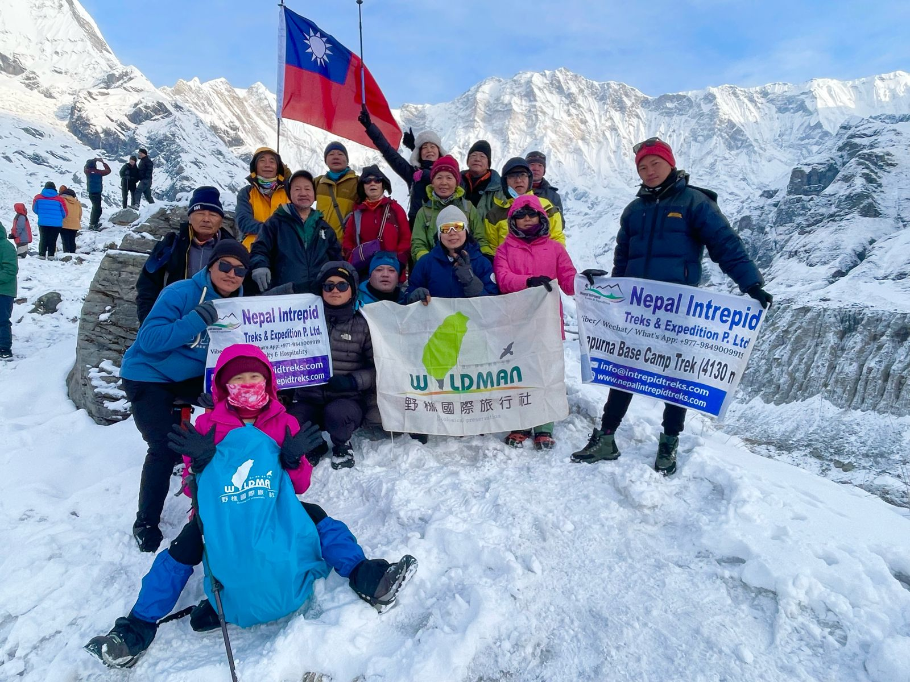
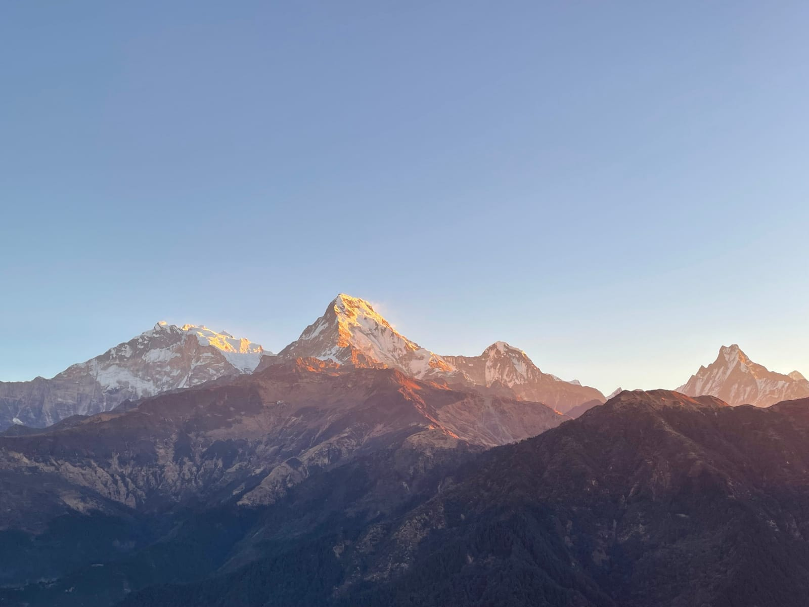
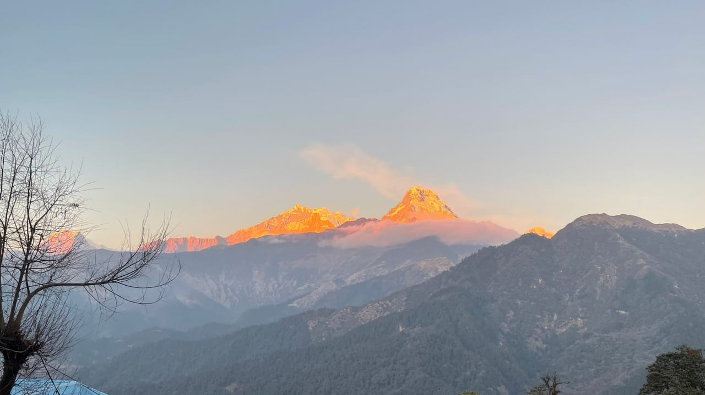
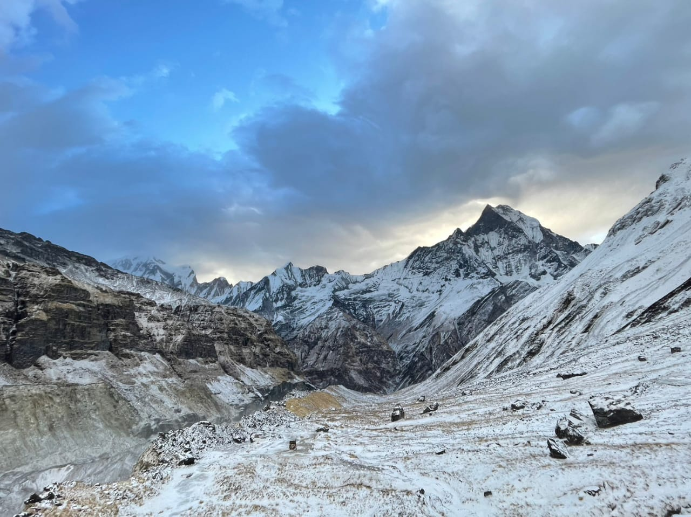
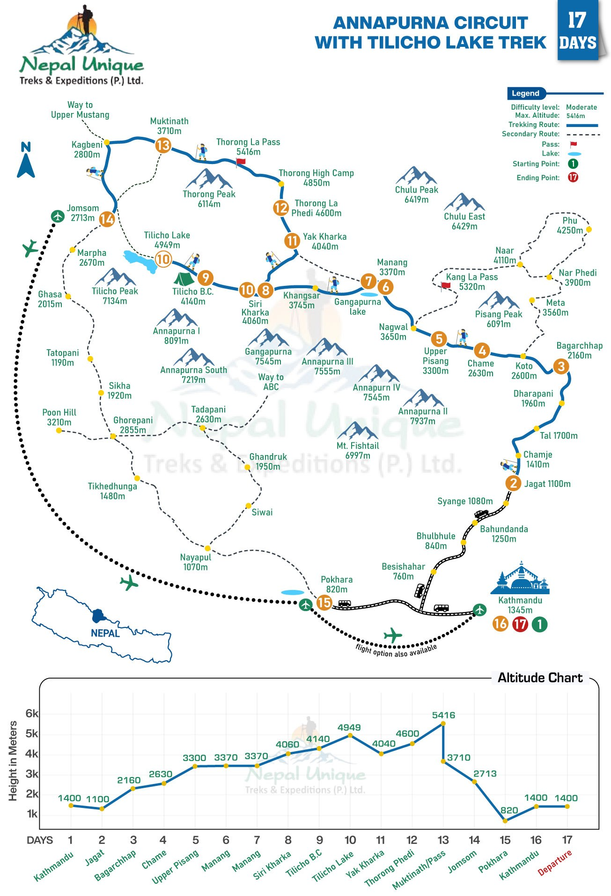

Annapurna Circuit with Tilicho Lake Trek
The Annapurna Circuit with is one of the most spectacular adventures in the Himalayas, combining the classic Annapurna Circuit Trek with the breathtaking side journey to Tilicho Lake, one of the highest lakes in the world at 4,919 meters. This trek is a perfect blend of diverse landscapes, cultural richness, and high-altitude adventure, making it a top choice for Trekking in Nepal and hiking in Nepal enthusiasts.





Key Trip Facts
Trek Overview
Trip Highlights
Introduction Annapurna Circuit with Tilicho Lake Trek
The Annapurna Circuit with Tilicho Lake Trek is a spectacular 17-day journey through the diverse landscapes of Nepal's Annapurna region. The trek combines the classic Annapurna Circuit with a rewarding side trip to Tilicho Lake at 4,919 meters, followed by the challenging crossing of Thorong La Pass at 5,416 meters.
Starting from the lower Marsyangdi Valley, the trail passes through lush forests, terraced farmland, traditional villages and Buddhist communities before reaching the high-altitude landscapes around Manang and Tilicho Lake. After visiting Tilicho Lake, the route continues toward Thorong Phedi and crosses Thorong La Pass before descending to the sacred pilgrimage site of Muktinath and the Mustang region.
This trek is ideal for travelers looking for a combination of high-altitude trekking, Himalayan scenery, mountain culture, Tilicho Lake and the famous Annapurna Circuit in one journey.
Annapurna Circuit with Tilicho Lake Trek Overview
The Annapurna Circuit with is one of the most spectacular adventures in the Himalayas, combining the classic Annapurna Circuit Trek with the breathtaking side journey to Tilicho Lake, one of the highest lakes in the world at 4,919 meters. This trek is a perfect blend of diverse landscapes, cultural richness, and high-altitude adventure, making it a top choice for Trekking in Nepal and hiking in Nepal enthusiasts.
Starting from lush subtropical valleys, the trail gradually ascends through terraced farmlands, dense forests, and traditional villages inhabited by Gurung, Thakali, and Manangi communities. As you move higher, the scenery transforms into a dramatic alpine environment with glaciers, rocky cliffs, and panoramic Himalayan peaks.
A major highlight of this journey is crossing the legendary Thorong La Pass 5416 m, one of the highest trekking passes in the world. The combination of the classic circuit route with the pristine beauty of Tilicho Lake makes this trek a complete Himalayan experience, offering both cultural immersion and high-altitude thrill.
Permits Required for Annapurna Circuit with Tilicho Lake Trek
To complete the Annapurna Circuit with Tilicho Lake Trek, trekkers must obtain specific permits as part of the Trekking in Nepal regulations. There are two main permits required are:
Annapurna Conservation Area Permit (ACAP)
This permit is essential for entering and trekking within the Annapurna Conservation Area. It helps support conservation efforts and sustainable tourism in the region.
Trekkers’ Information Management System (TIMS) Card
This card ensures trekker safety and helps authorities keep track of visitors in the region.
Both permits are easily available in Kathmandu or Pokhara through registered trekking agencies. Carrying valid identification and passport copies is necessary during the application process.
These permits are mandatory for the Annapurna Circuit Trek and Tilicho Lake Trek, ensuring a safe and well-managed trekking experience in Nepal protected Himalayan region.
Foods During Annapurna Circuit with Tilicho Lake Trek
Food on the Annapurna Circuit with Tilicho Lake Trek is a mix of traditional Nepali meals and basic international dishes, designed to provide energy for high-altitude trekking.
The most common and recommended meal is Dal Bhat (rice, lentil soup, and vegetables), which is highly nutritious and offers unlimited refills in most teahouses. Other popular options include noodles, pasta, fried rice, soups, pancakes, eggs, and potatoes.
As you ascend higher during the Annapurna Circuit Trek, especially near Thorong La Pass 5416 m and Tilicho Base Camp, food variety becomes more limited due to transportation challenges. However, meals remain fresh, warm, and energizing.
Hot drinks like tea, coffee, ginger lemon honey tea, and hot chocolate are widely available and very helpful for staying warm in cold mountain conditions.
Overall, the trekking food system ensures enough calories and comfort for trekkers exploring the demanding but rewarding routes of hiking in Nepal.
Accommodation During the Trek
Accommodation on the Annapurna Circuit with Tilicho Lake Trek is mainly in teahouses and mountain lodges run by local families. These provide simple but comfortable lodging facilities for trekkers.
Rooms are typically twin-sharing with basic beds, blankets, and shared bathrooms. As part of the Annapurna Circuit Trek, facilities become more basic as you go higher, especially near Tilicho Lake and Thorong Phedi.
In lower regions such as Besisahar, Chame, and Manang, accommodation options are more developed with better facilities, hot showers, and internet access. However, in higher altitude areas, comfort is minimal, but the hospitality remains warm and welcoming.
Teahouses also serve meals, making them a complete package for trekkers exploring Trekking in Nepal routes like this one.
Trekking Gear Preparation
Proper gear preparation is essential for the Annapurna Circuit with Tilicho Lake Trek, especially due to extreme altitude changes and cold conditions near Thorong La Pass 5416 m.
Most important trekking gear
- Warm down jacket and thermal layers for cold temperatures
- Waterproof trekking boots for rough terrain
- Sleeping bag rated for -10°C or lower
- Trekking poles for stability on steep sections
- Sunglasses and sunscreen for high UV exposure
- Headlamp with extra batteries
- First aid kit and personal medications
- Gloves, hats, and neck warmers for high-altitude protection
A good backpack (30/50 liters for trekking days and 60/70 liters for porters) is also essential. Proper preparation ensures safety and comfort while enjoying the best of hiking in Nepal and exploring the majestic Annapurna Circuit with Tilicho Lake Trek.
Best Time to do the Annapurna Circuit with Tilicho Lake Trek
The best time for the Annapurna Circuit with Tilicho Lake Trek is during the spring (March to May) and autumn (September to November) seasons, which offer the most stable weather and clear mountain views for Trekking in Nepal and Hiking in Nepal.
Spring Season (March to May)
Spring is one of the most beautiful times to do the Annapurna Circuit Trek and Tilicho Lake Trek. The weather is generally warm at lower altitudes and moderate at higher elevations, making trekking comfortable. The trails come alive with blooming rhododendrons and lush green landscapes.
Visibility is usually excellent, offering stunning views of Annapurna, Dhaulagiri, and surrounding peaks, including the dramatic route toward Thorong La Pass 5416 m. This season is ideal for nature lovers and photographers.
Autumn Season (September to November)
Autumn is widely considered the best overall season for the Annapurna Circuit with Tilicho Lake Trek. After the monsoon, the air is clean and crystal clear, providing the sharpest mountain views.
The weather is stable, with mild daytime temperatures and cold but manageable nights at higher altitudes. This is also the peak trekking season in Nepal, so trails and teahouses are lively and well-served.
Winter & Monsoon (Less Recommended)
Winter (December to February) brings heavy snowfall, especially near Thorong La Pass 5416 m, making the route challenging or sometimes closed. Monsoon (June to August) brings rain, landslides, and cloudy conditions, which can block views and make trails slippery.
Annapurna Circuit with Tilicho Lake Trek Itinerary: Day by Day
17 Days program for Annapurna Circuit with Tilicho Lake Trek. Daily timings and sequences remain flexible according to weather, flight operations, and group pace.
Day 1: Arrival in Kathmandu (1,345m / 4,413 ft)
Approx. 1,345 m / 4,413 ft
Upon arrival at Kathmandu International Airport, a representative from Nepal Unique Treks will warmly welcome you and transfer you to your hotel. Kathmandu is a fascinating city filled with ancient temples, lively markets, and colorful streets. After check-in, enjoy a trek briefing and meet your guide. In the evening, experience a traditional Nepali welcome dinner.
Day 2: Drive from Kathmandu to Jagat Altitude: 1,100m / 3,610 ft, Driving Distance, 230 km Driving Duration: 8 Hours
Approx. 1,100 m / 3,609 ft
Today begins your journey toward the Annapurna region. The drive follows scenic highways along rivers, terraced farmland, and traditional hillside villages. Passing through Besisahar and winding mountain roads, you gradually enter the remote landscapes of the Annapurna region. As the road ascends through rural Nepal, you will witness changing scenery from bustling towns to peaceful mountain settlements. By evening, you arrive at Jagat, a charming village that serves as the official entry point into the Annapurna Conservation Area.
Day 3: Trek from Chamje to Bagarchhap Altitude 2,160m / 7,087 ft, Distance 16 km, Walking Duration: 6–7 Hours
Approx. 2,160 m / 7,087 ft
After breakfast, the trek begins along the Marsyangdi River valley. The trail climbs through forests, waterfalls, and stone staircases while crossing suspension bridges over roaring rivers. You pass beautiful villages inhabited by Gurung and Tibetan-influenced communities. As you gain elevation, pine forests replace subtropical vegetation, and snow-covered peaks begin appearing on the horizon. Bagarchhap offers peaceful surroundings and spectacular mountain scenery.
Day 4: Trek from Bagarchhap to Chame Altitude 2,630m / 8,625 ft, Distance 15 km, Walking Duration: 6–7 Hours
Approx. 2,630 m / 8,629 ft
Today's trail passes through oak and pine forests with magnificent mountain views. As you continue upward, you may enjoy spectacular panoramas of Annapurna and Lamjung Himal. Crossing traditional villages and prayer walls, you finally reach Chame, the district headquarters of Manang. Chame is known for its beautiful surroundings, mountain views, and natural hot springs where trekkers can relax.
Day 5: Trek from Chame to Pisang Altitude 3,300m / 11056.43 ft, Distance 15 km, Walking Duration: 6 Hours
Approx. 3,370 m / 11,056 ft
The trail gradually enters higher Himalayan terrain. Dense forests slowly give way to more rugged alpine landscapes. One of today's highlights is crossing dramatic valleys with views of towering rock formations and snow-capped mountains. As you approach Pisang, the scenery dramatically changes into dry high-altitude landscapes reflecting Tibetan influences. Pisang sits beneath stunning mountain peaks and offers breathtaking sunset views.
Day 6: Trek from Pisang to Manang Altitude 3,370m / 11,710 ft, Distance 16 km, Walking Duration: 6–7 Hours
Approx. 3,370 m / 11,056 ft
Today offers one of the most scenic days of the Annapurna Circuit Trek. You walk through traditional villages, Buddhist monasteries, and ancient settlements influenced by Tibetan culture. The trail rewards you with incredible panoramic views of Annapurna II, Annapurna III, Gangapurna, and the surrounding Himalayan ranges. Upon arrival in Manang, you enter a culturally rich village surrounded by dramatic mountain landscapes.
Day 7: Acclimatization Day in Manang Altitude 3,370m / 11,710 ft
Approx. 3,370 m / 11,056 ft
Proper acclimatization is essential before heading to higher elevations. Rather than complete rest, Nepal Unique Treks recommends short hikes around Manang. You may hike to nearby viewpoints, monasteries, or glacial lakes to help your body adapt to altitude. This day also offers opportunities to explore local culture and enjoy stunning Himalayan scenery.
Day 8: Trek from Manang to Siri Kharka Altitude 4,060m Distance,15 km, Walking Duration: 4–5 Hours
Approx. 4,060 m / 13,320 ft
Leaving Manang, you follow a less crowded route toward the Tilicho Lake Trek. The trail gradually climbs through high-alpine landscapes and offers magnificent views of the surrounding peaks. The scenery becomes increasingly barren and dramatic as vegetation decreases with altitude. Siri Kharka is a small settlement with peaceful surroundings.
Day 9: Trek from Siri Kharka to Tilicho Base Camp Altitude 4,140m, Distance 6–7 km, Walking Duration: 5–6 Hours
Approx. 4,140 m / 13,583 ft
Today's trail traverses rugged landscapes beneath towering cliffs. Certain sections require careful walking due to rocky terrain and landslide-prone areas. The views become increasingly spectacular as you approach Tilicho Base Camp. Upon arrival, you can enjoy magnificent sunset views over the surrounding Himalayan peaks.
Day 10: Visit Tilicho Lake and Return to Siri Kharka Tilicho Lake Altitude: 4,919 meters (16,138 feet) Distance, Approximately 12–14 km, Walking Duration: 5–6 Hours
Approx. 4,919 m / 16,138 ft
Today is among the highlights of the journey. Early morning, you hike toward the magnificent Tilicho Lake, considered one of the world's highest lakes. Surrounded by snow-covered mountains and dramatic cliffs, the turquoise water creates an unforgettable sight. Trekkers often spend time taking photographs and absorbing the peaceful Himalayan atmosphere before descending back to Siri Kharka.
Day 11: Trek from Siri Kharka to Yak Kharka Altitude 4,040m, Distance 11 km, Walking Duration: 4–5 Hours
Approx. 4,040 m / 13,255 ft
Today, the trail reconnects with the main Annapurna Circuit Trek route. You walk through high-altitude yak grazing pastures and dry mountain terrain. The pace remains gradual to aid acclimatization before approaching Thorong La Pass.
Day 12: Trek from Yak Kharka to Thorong Phedi or High Camp Altitude 4,600m, Distance 7–8 km, Walking Duration: 6–7 Hours
Approx. 4,600 m / 15,092 ft
The route steadily climbs through alpine landscapes and rocky terrain. Breathing becomes more challenging as elevation increases. Thorong Phedi serves as the base camp before crossing the famous pass. Some trekkers continue to High Camp for a shorter summit day.
Day 13: Cross Thorong La Pass and Trek to Muktinath Thorong La Pass: 5,416m / 17,769 ft Muktinath Altitude 3,710m, Distance 16–17 km, Walking Duration: 6–8 Hours
Approx. 5,416 m / 17,769 ft
Today is the most demanding yet rewarding day of the trek. You start before sunrise and slowly ascend toward the legendary Thorong La Pass, one of the highest trekking passes in the world. Reaching the summit rewards you with spectacular Himalayan panoramas. After celebrating and taking photographs, a long descent leads toward Muktinath, an important pilgrimage site for both Hindus and Buddhists.
Day 14: Trek from Muktinath to Jomsom Altitude 2,713m, Distance 15 km, Walking Duration: 5 Hours
Approx. 2,713 m / 8,901 ft
The trail descends through the beautiful Kali Gandaki Valley. You pass traditional villages, dry landscapes, and dramatic mountain scenery before reaching Jomsom. Jomsom is a lively mountain town famous for apple orchards and beautiful Himalayan views.
Day 15: Fly from Jomsom to Pokhara Pokhara Altitude 810m / 2,657 ft, Flight Duration 20 Minutes
Approx. 810 m / 2,657 ft
A scenic morning flight offers breathtaking aerial views of the Annapurna and Dhaulagiri mountain ranges. Upon arrival in Pokhara, you can relax and enjoy lakeside cafés, restaurants, and the peaceful atmosphere of this beautiful city.
Day 16: Drive from Pokhara to Kathmandu Distance 210 km, Driving Duration 7/8 Hours
Approx. 1,345 m / 4,413 ft
After breakfast, you return to Kathmandu through scenic highways and countryside landscapes. Upon arrival, enjoy free time to shop, explore cultural sites, or celebrate your successful Himalayan adventure.
Day 17: Final Departure
Approx. 1,345 m / 4,413 ft
Your unforgettable Annapurna Circuit with Tilicho Lake Trek comes to an end today. Nepal Unique Treks staff will transfer you to the airport according to your flight schedule. We hope your journey through the Himalayas leaves you with lifelong memories, and we look forward to welcoming you again for another adventure in Nepal.
What is Included (Regular Package)
What is Excluded
Booking Dates & Availability
Packing List for Annapurna Circuit with Tilicho Lake Trek
Essential Info: Down jackets and sleeping bags can be rented/arranged per package inclusions.High-Altitude Trail Gear (6 items)
Cold-Weather Layering System (5 items)
Sleep, Health & Permits (3 items)
Read before you book: Annapurna Circuit with Tilicho Lake Trek
Practical logistics derived directly from this package's route facts, inclusions, and elevation profile.
Accommodation & Meals (Guesthouse)
Accommodation follows the package grade (Guesthouse) in Kathmandu and along the Annapurna route. Check your package Includes section for included meals and Kathmandu hotel nights.
Permits & Local Logistics
Transportation is arranged via Car, Jeep, Van. Applicable permits listed in the package inclusions are arranged by Nepal Unique Treks prior to departure.
Route Difficulty & Elevation (5416m)
Annapurna Circuit with Tilicho Lake Trek is rated Adventurous with a maximum elevation of 5416m. Follow your guide's pacing and stay hydrated throughout the 17 Days itinerary.
Best Time to Visit (Spring and Autumn)
Recommended operating season on the source page: Spring and Autumn. Additional official notes from the source page follow below.
Traveller Useful Information
Moderate to challenging
This trek is moderate to challenging. It needs no technical climbing, ropes or mountaineering skills, and the trails are well-established teahouse routes. The difficulty comes from altitude, length and weather rather than technical terrain. Most healthy people with good preparation can complete it, but it is harder than the Annapurna Base Camp or Poon Hill treks.
Long trekking days
- Expect 5-8 hours of walking on most days, over roughly 15-20 days.
- Thorong La day is the longest, usually 9-11 hours.
- The Tilicho day trip from base camp is around 6-8 hours round trip.
- The trek stacks many consecutive walking days, so fatigue builds up.
High altitude
- The route climbs from about 800 m to over 5,400 m.
- Above 3,000 m, the air holds noticeably less oxygen, and above 4,500 m even easy walking feels hard.
- Sleeping at 4,000 m+ can bring headaches, poor sleep, appetite loss and shortness of breath.
- Altitude sickness (AMS) is the main danger and can strike fit people too.
Tilicho Lake at 4,919 m
- Usually done as a day trip from Tilicho Base Camp (about 4,150 m), gaining roughly 750-800 m.
- The climb is steep and sustained, on rocky, exposed trail.
- The section between Khangsar and Tilicho Base Camp crosses landslide-prone slopes where trails can be narrow and shift with weather. Take care with footing and follow your guide.
- It is one of the highest lakes in the world, and the views are among the trek's highlights.
Thorong La at 5,416 m
- The famous high point and the hardest day of the circuit.
- You start very early (about 3-4 am) from Thorong Phedi or High Camp to cross before the afternoon winds.
- The final push is cold, windy and slow, and the thin air makes each step tiring.
- Getting to the pass is only halfway. The day continues with a long descent.
Steep ascents and descents
- The day up to Thorong La is a big climb, and the descent to Muktinath (about 3,760 m) drops over 1,600 m.
- That descent is punishing on knees and quads, and poles help a lot.
- Along the route there are repeated climbs, stone steps and suspension bridges.
- Some road-adjacent lower sections are less demanding, but the upper trail is real mountain trekking.
Weather considerations
- Best seasons: spring (March-May) and autumn (October-November), with clearer skies and stable conditions.
- Winter: very cold, with a real risk of snow closing Thorong La.
- Monsoon (June-August): rain and landslides on the lower and Tilicho sections, though the upper Manang and Mustang side is drier.
- Conditions on the pass can change quickly. Wind, snow and low temperatures (well below freezing) are possible even in season.
Good guides will delay or cancel a crossing when the weather is unsafe. Respect that decision.
Acclimatization
Acclimatization is what makes this trek safe, so a good itinerary includes:
- Slow, gradual gain in sleeping altitude, ideally no more than 300-500 m per night above 3,000 m.
- A rest day in Manang (3,540 m) with a short hike up to a higher point and back down ("climb high, sleep low").
- Extra time around Tilicho, which adds a high-altitude detour before Thorong La.
- Drink plenty of water (3-4 litres a day), eat well and avoid alcohol.
- Know the warning signs: persistent headache, nausea, dizziness, confusion, loss of coordination or breathlessness at rest. If symptoms worsen, descend. Never go higher with worsening symptoms.
- Ask your doctor about altitude medication such as acetazolamide (Diamox) before you go.
Physical preparation
- Start 2-3 months ahead if you can.
- Cardio: hiking, running, cycling or stair-climbing 3-4 times a week, building to 1-2 hours per session.
- Strength: leg work (squats, lunges, step-ups) and core, which help on descents and with a daypack.
- Hiking practice: long weekend hikes with hills and a loaded pack, in the boots you'll wear.
Endurance: aim to be comfortable walking 6-8 hours on consecutive days.
Gear: break in boots, and bring trekking poles, layers and a warm sleeping bag.
Medical check: see a doctor first if you have heart, lung or blood-pressure conditions.
Fitness helps, but it does not guarantee immunity to altitude sickness. A slow pace, proper acclimatization and a flexible schedule matter more than raw strength.
Yes, it's possible, but it's not the best time to do it. Monsoon runs roughly from June to August, with rain sometimes lingering into early September. Some people trek then, but it's harder and less predictable, and it carries more risk on this route.
What makes it harder
- Landslides and washed-out trails: The lower section (Besisahar to Chame) is the most affected, and jeep roads and trails can be blocked for hours or days.
- The Tilicho section: The slopes between Khangsar and Tilicho Base Camp are already landslide-prone, and heavy rain makes them more dangerous. Guides often advise against this detour in wet conditions.
- Leeches and mud: Expect leeches on the lower, humid trails, and muddy, slippery footing.
- Poor views: Clouds often hide the mountains, which is a big loss on a trek famous for its scenery.
- Delays: Jeep transport and the Jomsom-Pokhara flights are often disrupted by weather, so schedules slip.
- Thorong La: It can be crossed, but cloud, rain and even snow at the top are possible, and a bad-weather day may force a wait.
What's better
- Fewer trekkers: Teahouses are quiet and easy to book.
- Lower prices: Some operators discount monsoon departures.
- Greener scenery: The lower valleys are lush, with waterfalls.
- Drier upper section: Beyond Chame and Pisang, Manang and Mustang sit in the Himalayan rain shadow and get much less rain.
If you go anyway
- Consider starting higher up, for example by jeep to Chame or Manang, to skip the wettest section.
- Build in extra buffer days for delays, and skip Tilicho if conditions look bad.
- Bring a rain jacket and pants, a waterproof pack cover, dry bags, quick-dry clothing and gaiters or leech socks.
- Check road and trail conditions with your operator before departure, and trust your guide's calls.
- Make sure your insurance covers trekking to 5,500 m and helicopter evacuation, since rescue flights are harder to run in bad weather.
Better seasons
October to November (clear and stable) and March to May (warmer, with rhododendrons in bloom) are the best windows. With October about to begin, the monsoon has just ended, so conditions are improving now, though it's worth checking recent trail and road reports before you commit.
Government-licensed trekking agency
- The agency is registered and licensed to operate in Nepal, so it works within the law and within tourism safety standards.
- Licensed operators arrange your permits (ACAP, TIMS or local equivalents) correctly and employ registered guides and porters.
- Ask for the registration or license number, which you can check with Nepal's tourism authorities.
Experienced local trekking guides
- Guides grew up in or near the Annapurna region and know the trails, villages, weather patterns and cultural customs.
- They are trained in route-finding, altitude management and first aid, and speak English.
- They adjust pace and plans to conditions and to how each trekker is feeling.
Experienced porters
- Porters carry your main bag so you can walk comfortably with a light daypack.
- Fair wages, insurance, proper clothing and sensible load limits (about 10 kg per trekker) show a responsible operator.
Small group and private trekking options
- Small groups keep costs lower and give more personal attention than large tour groups.
- Private treks let you set your own pace, dates and rest days, which suits families, couples and first-timers.
- Smaller groups also make it easier for the guide to watch each person for altitude symptoms.
Airport pickup and assistance
- You are met at Kathmandu airport and taken to your hotel, which removes the stress of arriving in a busy, unfamiliar city.
- The team can help with the visa process, trip briefing, gear checks and last-minute shopping or rentals.
Flexible itinerary
- The schedule can adapt to weather, road conditions, fitness and acclimatization needs, for example adding a rest day in Manang or skipping Tilicho if the trail is unsafe.
- You can choose to extend, shorten, or add side trips, and choose your transport (jeep or flight) at the end.
24/7 local support
- The Kathmandu office is reachable during the trek, and guides can contact it from the trail.
- If flights are cancelled, roads are blocked or plans change, the team can rebook transport and hotels and keep your schedule on track.
First-aid and altitude monitoring
- Guides carry a first-aid kit and check for altitude symptoms daily, through questions and, ideally, a pulse oximeter (SpO₂ and heart rate).
- Clear rules apply: rest if symptoms appear, and descend if they worsen.
Emergency assistance
- The team coordinates helicopter rescue or evacuation to hospitals in Pokhara or Kathmandu and works with your insurance company.
- Good travel insurance is still essential. It should cover trekking up to 5,500 m and helicopter evacuation.
Transparent pricing
- The package clearly lists what is included (permits, guide, porter, accommodation, meals, transport) and what is not (international flights, visa, insurance, tips, personal expenses).
- There are no hidden charges, and any optional extras are quoted upfront.
The Circuit is one of the world's great treks, and Tilicho Lake is its most rewarding side trip. Together they make a fuller, more varied journey.
Annapurna Circuit
- Diverse landscapes: Green farmland and forests give way to alpine valleys and the dry high desert of Mustang.
- Villages: Gurung, Manangi and Thakali communities, with monasteries, prayer walls and teahouse stays.
- Manang (3,540 m): The key acclimatization stop, with mountain views, rest-day hikes and cozy cafés.
- Thorong La (5,416 m): The dramatic high pass that defines the trek.
- Muktinath: A sacred Hindu and Buddhist site, and a fitting end to the high section.
Tilicho Lake
- High-altitude lake: At 4,919 m, it is one of the highest lakes of its size in the world.
- Dramatic scenery: Turquoise water beneath Tilicho Peak and the Annapurna walls.
- Extra acclimatization: More time at altitude before Thorong La, though the detour is demanding too.
- Less-traveled route: Quieter and wilder than the main trail.
Altitude Profile of Annapurna Circuit with Tilicho Lake Trek
Weather on Annapurna Circuit with Tilicho Lake Trek
Annapurna Circuit with Tilicho Lake Trek Route Map

Book This Trek
Contact our Kathmandu coordinators using the booking panel for private or fixed-group departures.
Trip Feedback
Explore verified traveller stories or leave feedback on Nepal Unique Treks.
Visit Nepal Unique Treks